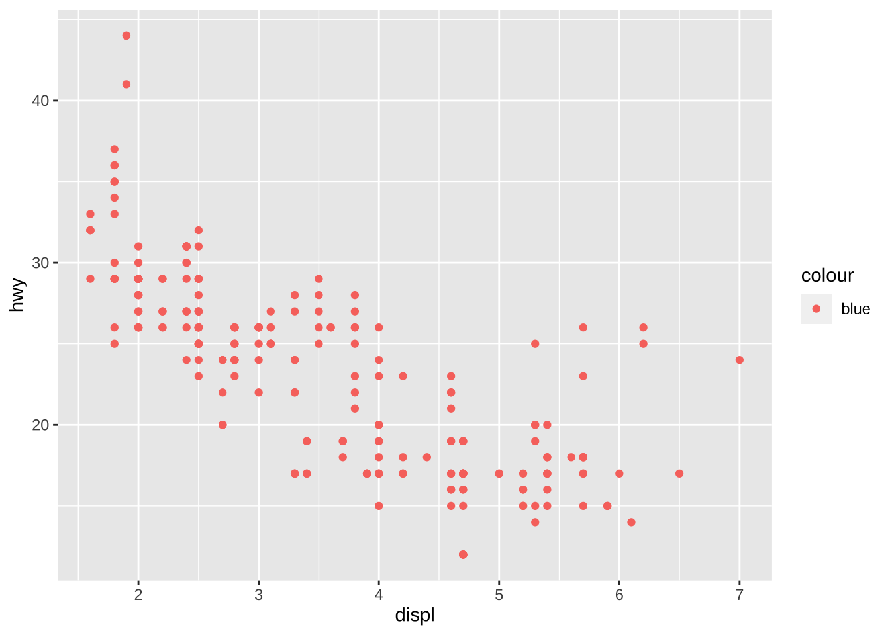
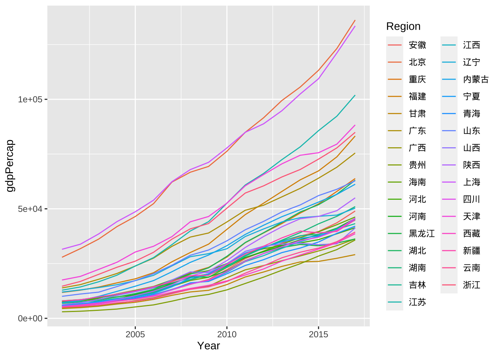
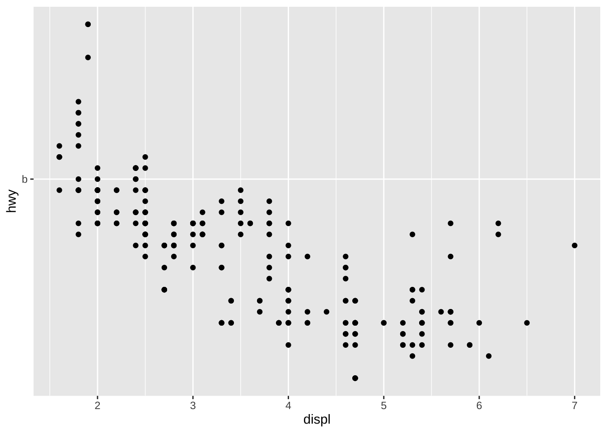
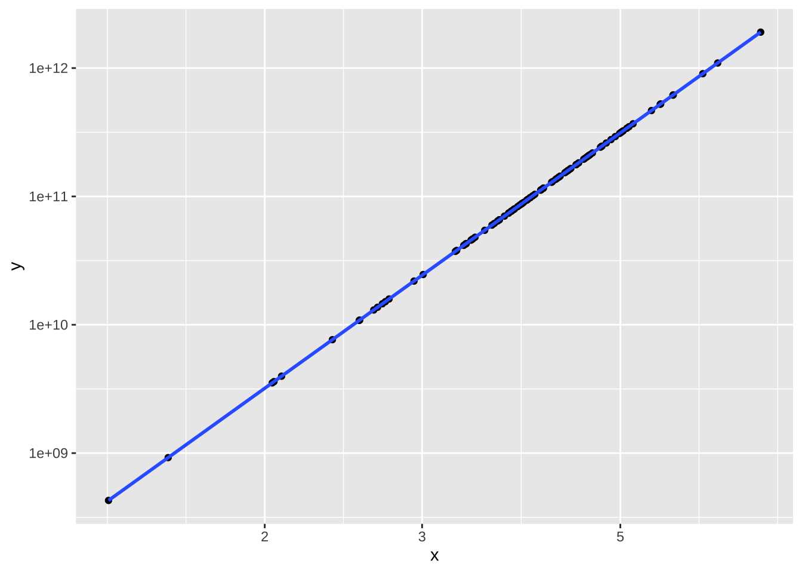

载入需要的程辑包：sysfonts载入需要的程辑包：showtextdb载入需要的程辑包：sysfonts载入需要的程辑包：showtextdb分组操作：aes(color = drv)
将颜色映射到分类变量drv
对不同drv值的数据，按不同颜色分别绘图
library(tidyverse)── Attaching core tidyverse packages ──────────────────────── tidyverse 2.0.0 ──
✔ dplyr 1.1.3 ✔ readr 2.1.4
✔ forcats 1.0.0 ✔ stringr 1.5.0
✔ ggplot2 3.4.4 ✔ tibble 3.2.1
✔ lubridate 1.9.3 ✔ tidyr 1.3.0
✔ purrr 1.0.2
── Conflicts ────────────────────────────────────────── tidyverse_conflicts() ──
✖ dplyr::filter() masks stats::filter()
✖ dplyr::lag() masks stats::lag()
ℹ Use the conflicted package (<http://conflicted.r-lib.org/>) to force all conflicts to become errorsggplot(data = mpg, aes(x = displ, y = hwy, color = drv)) +
geom_point()
对color的操作可以放到geom_point中
ggplot(data = mpg, aes(x = displ, y = hwy)) +
geom_point(aes(color = drv))
ggplot(data = mpg, aes(x = displ, y = hwy,color = drv)) +
geom_point() +
geom_smooth()`geom_smooth()` using method = 'loess' and formula = 'y ~ x'
ggplot(data = mpg, aes(x = displ, y = hwy)) +
geom_point(aes(color = drv)) +
geom_smooth()`geom_smooth()` using method = 'loess' and formula = 'y ~ x'ggplot(data = mpg, aes(x = displ, y = hwy, color = class)) +
geom_point(aes(color = drv)) +
geom_smooth()`geom_smooth()` using method = 'loess' and formula = 'y ~ x'
几何对象ggplot2绘图系统中全局与局部的规定
ggplot()中的数据和映射是全局的，可供所有几何对象共用
位于几何对象中的数据和映射，是局部的，只供该几何对象使用
几何对象优先使用局部的，局部没有则用全局的
例：针对分省数据绘制人均GDP与年份之间的折线图，每个年份都对应31个省份人均GDP值
load("../slides2024/Lecture2/data/ecostats.rda")
ecostats# A tibble: 527 × 7
Region Year Electricity Investment Consumption Population gdpPercap
<chr> <int> <dbl> <dbl> <dbl> <dbl> <dbl>
1 安徽 2001 360. 893. 2739 6128 5716.
2 北京 2001 400. 1513. 9057 1385 27881.
3 福建 2001 439. 1173. 4770 3445 11823.
4 甘肃 2001 306. 460. 2099 2523 4461.
5 广东 2001 1458. 3484. 5445 8733 13886.
6 广西 2001 332. 656. 2572 4788 4760.
7 贵州 2001 335. 536. 2178 3799 2983.
8 海南 2001 43.0 213. 2971 796 7276.
9 河北 2001 868. 1913. 2749 6699 7558.
10 河南 2001 808. 1544. 2381 9555 5791.
# ℹ 517 more rowsggplot(data = ecostats, aes(x = Year, y = gdpPercap)) +
geom_line()ggplot(data = ecostats, aes(x = Year, y = gdpPercap)) +
geom_line(aes(color = Region))ggplot(data = ecostats, aes(x = Year, y = gdpPercap)) +
geom_line(aes(color = Region)) +
geom_smooth()`geom_smooth()` using method = 'loess' and formula = 'y ~ x'
ggplot(data = ecostats, aes(x = Year, y = gdpPercap,color = Region)) +
geom_line() +
geom_smooth()`geom_smooth()` using method = 'loess' and formula = 'y ~ x'分组图形特征映射
ggplot(data = ecostats, aes(x = Year, y = gdpPercap)) +
geom_line(aes(group = Region), alpha = 0.2) ggplot(data = ecostats, aes(x = Year, y = gdpPercap, group=Region)) +
geom_line(alpha = 0.2) ggplot(data = mpg, aes(x = displ, y = hwy)) +
geom_point() +
scale_y_continuous(breaks = seq(10,50,by=20), labels = letters[1:3])p <- ggplot(tail(economics,45), aes(date, uempmed/100)) +
geom_line()+
scale_x_date(date_breaks = "6 months", date_labels = "%b%Y") +
scale_y_continuous(labels = scales::percent)p1 <- ggplot(data = mpg, aes(x = displ, y = hwy))
p2 <- p1 + geom_point()
p2p2 +
geom_point(aes(color = drv), shape = 2)
p1 +
geom_point(aes(color = drv), shape = 2)
p1 <- p +
labs(x = "Month", y = "Unemployed rate")
p1p2 <- p +
xlab("Month") +
ylab("Unemployed rate")
p2 pMpg = ggplot(data = mpg, aes(x = displ, y = hwy))
p1 = pMpg + geom_point(aes(color = drv))
p1 
p2 = p1 +
labs(color = "驱动方式") +
theme(legend.position = "top")
p2
coord_cartesian命令
笛卡尔坐标系就是直角坐标系和斜角坐标系的统称
ggplot(data = mpg, aes(x = displ, y = hwy)) +
geom_point() +
scale_y_continuous(breaks = seq(10,50,by=20), labels = letters[1:3])+
coord_cartesian(ylim = c(0,50))ylim后不能显示scale设置的breaks点的label
ggplot(data = mpg, aes(x = displ, y = hwy)) +
geom_point() +
scale_y_continuous(breaks = seq(10,50,by=20), labels = letters[1:3])+
ylim(0,50) Scale for y is already present.
Adding another scale for y, which will replace the existing scale.ggplot(data = mpg, aes(x = displ, y = hwy)) +
geom_point() +
coord_cartesian(ylim = c(0,50))+
scale_y_continuous(breaks = seq(10,50,by=20), labels = letters[1:3])ggplot(data = mpg, aes(x = displ, y = hwy)) +
geom_point() +
ylim(0,50) +
scale_y_continuous(breaks = seq(10,50,by=20), labels = letters[1:3])Scale for y is already present.
Adding another scale for y, which will replace the existing scale.n=100
x=rnorm(n,4,1)
y=10^(5*log10(x)+8)+rnorm(n,1,2)dataxy = tibble(x,y)
p1 <- ggplot(data = dataxy, aes(x,y)) +
geom_point()对数变换之后作散点图
p2 <- p1 +
scale_x_log10() +
scale_y_log10()
p2mylog <- function(x){
return(log10(x))
}p2 <- p1 +
scale_x_mylog() +
scale_y_mylog()
p2进行回归分析
p2 <- p1 +
scale_x_log10() +
scale_y_log10() +
geom_smooth()
p2`geom_smooth()` using method = 'loess' and formula = 'y ~ x'
p2 +
labs(title = "回归分析",
subtitle = "对数",
caption = "数据随机模拟产生")`geom_smooth()` using method = 'loess' and formula = 'y ~ x'p1 <- ggplot(data = mpg, aes(x = displ, y = hwy, color = drv)) +
geom_point() +
labs(color = "驱动方式")
p1
p1 +
scale_color_manual("驱动方式1",
values = c("red", "blue", "green"),
labels = c("4", "f", "r"))按什么顺序排的颜色？
p1 +
scale_color_manual("驱动方式2",
breaks = c("f", "r", "4"),
values = c("red", "blue", "green"),
labels = c("front", "rear", "four"))p1 +
scale_color_manual("驱动方式3",
breaks = c("f", "4", "r"),
values = c("blue", "red", "green"),
labels = c("front", "four", "rear"))
p1<-ggplot(mpg,aes(displ, hwy))+geom_point(aes(color = drv))
p1
library(ggrepel)
id1 = sample(which(mpg$drv=="r"),1)
id2 = sample(which(mpg$drv=="f"),1)
id3 = sample(which(mpg$drv=="4"),1)
dataMark = mpg[c(id1,id2,id3),]
p1 +
geom_label_repel(data = dataMark, aes(label = drv))maxValueR = max(mpg[which(mpg$drv=="r"),]$hwy)
maxValueF = max(mpg[which(mpg$drv=="f"),]$hwy)
maxValue4 = max(mpg[which(mpg$drv=="4"),]$hwy)
id1 = which(mpg$drv=="r" & mpg$hwy == maxValueR)
id2 = which(mpg$drv=="f" & mpg$hwy == maxValueF)
id3 = which(mpg$drv=="4" & mpg$hwy == maxValue4)
dataMark = mpg[c(id1,id2,id3),]
p1 +
geom_label_repel(data = dataMark, aes(label = drv))利用分组统计操作
library(magrittr)
载入程辑包：'magrittr'The following object is masked from 'package:purrr':
set_namesThe following object is masked from 'package:tidyr':
extractbest_in_drv=mpg %>%
group_by(drv)%>%
slice_max(hwy,n =1)
p1 +
geom_label_repel(data = best_in_drv, aes(label = drv))
p1+
geom_text_repel(data =best_in_drv, aes(label= drv))
注意映射与赋值的区别
p1+
geom_text_repel(data =best_in_drv, label= "max")
以drv为横轴，对hwy数据进行汇总
画出每个drv对应的均值
p1 <- ggplot(data = mpg, aes(x = drv, y = hwy))
p2 <- p1 +
stat_summary(fun.data = mean_se, geom = "bar", aes(color = drv, fill = drv))
p2画出每个drv的误差线
p3 <- p1 +
stat_summary(fun.data = mean_se, geom = "errorbar")
p3参数fun.data
将数据变形，这个函数默认是mean_se()
返回的是数据框，这个数据框将用于geom参数画图
如果fun.data返回的数据框包含了所需要的美学映射，图形就会显示出来
将柱状图与误差线放到一起
p1 +
stat_summary(fun = mean, geom = "bar", aes(color = drv, fill = drv)) +
stat_summary(fun.data = mean_se, geom = "errorbar") 95%置信区间
p1 +
stat_summary(fun = mean, geom = "bar", aes(color = drv, fill = drv)) +
stat_summary(fun.data = ~mean_se(., mult = 1.96), geom = "errorbar") p1 +
stat_boxplot(geom = "boxplot", aes(color = drv))p1 +
geom_boxplot(aes(color = drv))p1 +
geom_boxplot(aes(color = drv)) +
stat_summary(fun.data = ~mean_se(., mult = 1.96), geom = "errorbar") 
p1 +
geom_boxplot(aes(color = drv)) +
stat_summary(fun.data = ~mean_se(., mult = 1.96), geom = "errorbar") +
coord_flip()